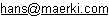

Maerki Informatik
Hans Märki, Software-Entwicklungen und Beratung
Märki Informatik
Märki Informatik - Portrait
Märki Informatik - Portrait
Märki Informatik, Hans MärkiSoftware-Entwicklung und BeratungHans Märki  |
Positron, Peter MärkiEntwicklung und Beratung im Bereich Elektronik und Physik
Peter Märki |